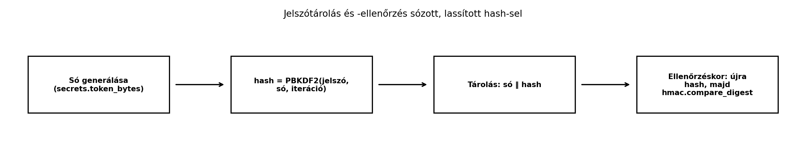

A jelszó a leggyakoribb hitelesítési faktor, ezért a jelszavakat tároló adatbázis mindig a támadók elsődleges célpontja. Ha egy szervert feltörnek, a támadó gyakran nem a szerveren futó alkalmazást akarja átvenni, hanem a felhasználói jelszavak hash-eit akarja megszerezni, hogy azután offline – a saját gépén, tetszőleges próbálkozásszámmal – megkeresse a jelszavakat. Ez a fenyegetés alapvetően más, mint az online támadás, ahol a bejelentkezési felület sebességkorlátot és zárolást alkalmazhat. Az offline támadó sebességét csak a hash-függvény számítási költsége és a hardvere korlátozza. Ezért a jelszótárolásnál két dolgot kell elérni: a hash-függvény legyen sózott, hogy az előre kiszámított táblákat megtörjük, és legyen szándékosan lassú, hogy a nyers erős és szótáras támadást is drágítsuk.

A flow-diagram a helyes jelszótárolás folyamatát mutatja: véletlen sót generálunk, a jelszót a sóval együtt egy lassú hash-függvénybe (például PBKDF2 vagy bcrypt) adjuk, a sót és a hash-t együtt tároljuk, ellenőrzéskor pedig újraszámítjuk a hash-t, és konstans időben hasonlítjuk össze.
Definíció. Só (salt) egy egyedi,
véletlenszerű bitsorozat, amelyet a jelszóval együtt hash-elünk, és a
hash mellett nyíltan tárolunk. A só nem titok; célja, hogy ugyanaz a
jelszó két felhasználónál eltérő hash-t adjon, és hogy az előre
kiszámított szivárványtáblákat megtörje. Egy jelszó hash-ének tárolt
alakja jellemzően só || hash(jelszó, só) formában jelenik
meg.
Definíció. Lassú jelszó-hash (password hashing) olyan kulcsszármaztató függvény, amely szándékosan nagy CPU- és/vagy memóriaköltséggel rendelkezik, így az offline jelszókeresést drágítja. Ebbe a családba tartozik a PBKDF2, a bcrypt, a scrypt és az Argon2.
Definíció. A PBKDF2 (Password-Based Key Derivation Function 2) egy iteratív, CPU-lassítású kulcsszármaztató függvény, amelyet az RFC 8018 specifikál. A hívás alakja
ahol a jelszó, a só, az iterációszám, a kimenet hossza, pedig egy pszeudovéletlen függvény, jellemzően HMAC-SHA256. A PBKDF2 a hosszúságú kimenetet blokkokra osztja; minden blokkra
ahol
és az blokkindex 32 bites big-endian reprezentációja. A a bitenkénti XOR. A struktúra tehát egy láncszerű HMAC-számítás: minden iteráció az előző HMAC-eredményből indul, ezért a számítás párhuzamosíthatósága korlátozott, bár a PBKDF2 nem memóriaigényes.
Definíció. A bcrypt egy
Blowfish-alapú, sózott, CPU-igényes jelszó-hash függvény. Költségfaktora
módon skálázik, ahol a cost jellemzően 10 és 14 között van.
A bcrypt a sót és a hash-t egyetlen karakterláncba kódolja, például
$2b$12$... formátumban; a $2b$ verziójelzés, a
12 a költségfaktor, a további rész pedig a só és a hash
Radix-64 kódolása.
Definíció. A bors (pepper) egy titkos, a jelszótól és a sótól független érték, amelyet a hash bemenetébe keverünk; jellemzően hardveres biztonsági modulban (HSM) tároljuk. A hash például így számítható: . Ha a bors a kóddal vagy a konfigurációval együtt szivárog, nem nyújt valódi védelmet, ezért valódi értékét csak HSM-ben őrizve adja.
Példa 1. A só hatása a szivárványtáblák ellen. Tegyük fel, hogy egy adatbázis 8 karakteres, kisbetűs jelszavak sózatlan SHA-256 hash-eit tartalmazza. A jelszótér mérete . A támadó előre kiszámíthat egy szivárványtáblát: láncokat épít a hash-függvény és egy redukciós függvény váltogatásával, és a táblában csak a láncok kezdő- és végpontjait tárolja. Ez a tábla újrahasznosítható minden további, ugyanazon hash-függvényt használó adatbázis feltörésére. Ha azonban minden felhasználóhoz egy 128 bites véletlen sót adunk, a támadónak minden egyes sóhoz külön szivárványtáblát kellene építenie. Ez gyakorlatilag lehetetlen: a tábla építése önmagában is nagyjából akkora munka, mintha az adott sóval közvetlenül futtatná a nyers erős támadást. A só tehát nem lassítja a célzott szótáras támadást, de megszünteti a globális előre számítás előnyét.
Példa 2. A PBKDF2 szerkezete kis paraméterekkel.
Legyen a jelszó pw, a só s0, az iterációszám
,
a kimenet hossza
bájt, a PRF pedig HMAC-SHA256. A számítás a következő lépésekből
áll:
0x00000001 bájt. A belső bemenet
.A HMAC-SHA256 belsejét itt nem számoljuk ki kézzel; a cél a
láncszerkezet megértése. Kis példa Pythonban:
hashlib.pbkdf2_hmac("sha256", b"pw", b"s0", 2).hex() =
99a0695480dee7c32a14f5dc2462105c94048f3e0d266ca08eb2dad942e8ec6e
(futtatva); ugyanez kézzel:
u1 = hmac.new(b"pw", b"s0" + (1).to_bytes(4, "big"), "sha256").digest(),
u2 = hmac.new(b"pw", u1, "sha256").digest(),
bytes(a ^ b for a, b in zip(u1, u2)).hex() – ugyanezt az
értéket adja.
Figyelem. Ez a támadás kizárólag oktatási célú, saját vagy játék-környezetben generált hash-ek ellen futtatható; éles rendszer ellen jogellenes.
A támadó a következő lépéseket hajtja végre:
$2b$12$... bcrypt, vagy
salt:hash) felismeri a konstrukciót.a →
@, s → $) tovább bővítik a
listát.A támadás költségét a hash-függvény sebessége és a jelszótér mérete határozza meg. Egy csúcskategóriás fogyasztói GPU nagyságrendileg – nyers SHA-256 hash-t számol másodpercenként (ez a nagyságrend hardverfüggő, ellenőrzésre szorul). Ha a jelszótér (8 karakter, 95 karakteres ábécé), akkor gyors hash esetén a támadási idő:
Ez tehát gyakorlatilag kivitelezhető egy elkötelezett támadónak. Ha viszont PBKDF2-HMAC-SHA256-ot használunk iterációval, ugyanaz a GPU jelszópróbánként kb. SHA-256-tömörítést végez, így nagyságrendileg jelszó/s sebességet ér el (hardverfüggő, ellenőrizendő). Ekkor a fenti jelszótér bejárása:
A lassítás tehát a kulcs. A szótáras támadás még ennél is gyorsabb, mert a szótár jóval kisebb, mint a teljes jelszótér; egy elemű szótár például lassú hash esetén is csak másodperc. Ezért a jelszó erőssége is fontos, de a lassú hash a gyenge jelszavak elleni támadást is jelentősen drágítja.
Szivárványtábla és a só. Szivárványtábla használatával a támadó a nyers erős munka egy részét előre elvégezheti, így egy adott hash-hez tartozó jelszó lekérdezése gyors. A só ezt az előnyt megszünteti, mert minden sóhoz külön tábla kell. Fontos azonban látni: a só nem lassítja a célzott szótáras támadást, csak a globális előre számítást akadályozza. Ezért a só önmagában nem elég; lassítani is kell.
A helyes jelszótárolási séma a következő lépésekből áll:
secrets.token_bytes).só || hash formátumban. A só nem titok.hmac.compare_digest, nem ==).Bors és HSM. A bors egy titkos, jellemzően 128 bites érték, amelyet a sóhoz hasonlóan a jelszóval együtt hash-elünk, de a sóval ellentétben a borsot nem tároljuk az adatbázisban. Helyes használat esetén a bors egy HSM-ben van, és az alkalmazás csak a jelszót és a sót küldi a HSM-nek, amely elvégzi a hash-számítást. Ha a támadó ellopja az adatbázist, de a HSM-et nem, akkor nem tudja újraszámolni a hash-eket, mert a bors hiányzik. Ha a borsot az alkalmazáskódban vagy a konfigurációs fájlban tároljuk, akkor egy adatbázis-szivárgás gyakran a borsot is érinti, így az nem ad valódi védelmet. A bors tehát kiegészítő védelem, nem helyettesíti a sót és a lassítást.
2012-ben a LinkedIn hálózatából mintegy 6,5 millió jelszó hash-e szivárgott ki. A tárolt értékek sózatlan SHA-1 hash-ek voltak. A SHA-1 gyors, és só nélkül a szivárványtáblás, illetve szótáras támadásokkal szemben gyakorlatilag védtelen. A támadók rövid időn belül visszafejtették a gyenge jelszavak jelentős részét, és a kiszivárgott listát később további támadásokban is felhasználták. (Az évszám és a számok ellenőrzésre szorulnak, de a tanulság stabil.) Az eset rámutatott: a jelszótárolásnál a só nélküli gyors hash katasztrófa. A mai gyakorlat szerint még a sózott SHA-256 sem elfogadható, mert a GPU-s offline támadás túl gyors. Ezért használunk PBKDF2-t, bcryptet, scryptet vagy Argon2-t.
Az alábbi kód a hashlib és a hmac standard
könyvtári függvényeit használja PBKDF2-hash számítására és
ellenőrzésére. A tesztvektor rögzített, és kizárólag a
reprodukálhatóságot szolgálja; a valódi használat véletlen sót
igényel.
# OKTATÁSI CÉLRA – NEM ÉLES HASZNÁLATRA
import hashlib, hmac, secrets
def hash_password(password: bytes, salt: bytes, iterations: int = 600_000) -> bytes:
return hashlib.pbkdf2_hmac("sha256", password, salt, iterations, dklen=32)
def verify_password(password: bytes, salt: bytes, expected: bytes,
iterations: int = 600_000) -> bool:
actual = hash_password(password, salt, iterations)
return hmac.compare_digest(actual, expected)
# Fix tesztvektor: hash_password(b"password", b"salt", iterations=1)
# hex-kimenete: 120fb6cffcf8b32c43e7225256c4f837a86548c92ccc35480805987cb70be17b
# Éles használathoz véletlen sót generálunk:
salt = secrets.token_bytes(16)
stored = hash_password(b"correct horse battery staple", salt)
print(verify_password(b"correct horse battery staple", salt, stored)) # True
print(verify_password(b"wrong", salt, stored)) # FalseVárt kimenet:
True
FalseA kód a hashlib.pbkdf2_hmac függvényt használja, amely
az RFC 8018 szerinti PBKDF2-HMAC-SHA256 implementáció. A só generálása a
secrets modullal történik, az összehasonlítás pedig
hmac.compare_digest-tel, amely konstans időben fut. Éles
rendszerben is hasonló könyvtári függvényeket használunk, nem saját
implementációt.
== operátorral.
Bár a jelszó-ellenőrzés tipikusan nem okoz érdemi időzítéses támadást
hálózaton keresztül, a helyes gyakorlat a konstans idejű
összehasonlítás, például hmac.compare_digest; ez a szokás
más MAC-ellenőrzéseknél is véd.hashlib.sha256-ot használni jelszótárolásra?stored = hashlib.sha256(salt + password).hexdigest();
if stored == hashlib.sha256(salt + input_password).hexdigest():hmac.compare_digest használata a
== helyett?1. feladat (A). Magyarázd el, miért nem titok a só, és miért kell mégis egyedinek lennie.
2. feladat (A). Tegyük fel, hogy egy támadó jelszót tartalmazó szótárat futtat egy sózott, iterációjú PBKDF2-HMAC-SHA256 hash ellen, és a GPU-ja jelszó/s sebességet ér el. Mennyi idő alatt fut le a teljes szótár?
3. feladat (B). Írj Python kódot, amely
PBKDF2-HMAC-SHA256 segítségével hash-el egy jelszót, véletlen sót
generál, kiírja a sót és a hash-t hexadecimálisan, majd ellenőriz egy
másik jelszót. A kódban használj secrets és
hmac.compare_digest függvényeket. (A kód nem lesz éles,
csak oktatási.)
4. feladat (B). Egy adatbázisban minden
felhasználónál só || SHA-256(jelszó, só) szerepel. A támadó
egy adott felhasználó hash-ét látja, és ismeri a sót. Miért nem véd a só
a szótáras támadás ellen ennél a felhasználónál? Mi
ellen véd a só, és mi ellen nem?
5. feladat (C). Bizonyítsd be (szöveges érveléssel): ha a pepper egy HSM-ben van, és a támadó ellopja a sókat és a hash-eket, de nem fér hozzá a HSM-hez, akkor az offline jelszókeresés nem kivitelezhető. Mi történik, ha a pepper kiszivárog?
6. feladat (D). Játékimplementáció: egy fejlesztő a
jelszavakat hashlib.sha256(password.encode()).hexdigest()
formában tárolta, só nélkül. A támadó megszerezte a következő hash-t:
5e884898da28047151d0e56f8dc6292773603d0d6aabbdd62a11ef721d1542d8.
A támadó szótára:
["password", "123456", "jelszo123", "admin", "letmein"].
Írd le a támadás lépéseit, és írj Python kódot, amely megtalálja a
jelszót. (Használd a hashlib modult.)
== összehasonlítás időzítéses támadásra adhat lehetőséget
(bár jelszó-ellenőrzésnél kevésbé kritikus).hmac.compare_digest konstans időben fut,
függetlenül attól, hogy hol egyezik meg a két bájt; a ==
rövidre zárhat, és futási ideje szivároghat a prefixről.1. feladat. A só nem titok, mert a biztonság nem az ismeretlenségén múlik; ha a támadó megszerzi a hash-t, a sót is megszerzi. A só feladata, hogy ugyanaz a jelszó két felhasználónál eltérő hash-t adjon, és hogy a globális szivárványtáblákat használhatatlanná tegye. Az egyediség azért fontos, mert ha két felhasználó sója megegyezik, a hash-ük is megegyezik, és a támadó felismeri az azonos jelszavakat. A véletlenszerű, legalább 128 bites só egyedisége ezt gyakorlatilag biztosítja.
2. feladat. A teljes szótár futtatása hash-számítást igényel. Sebesség hash/s, ezért az idő:
Ez néhány óra, tehát egy elkötelezett támadónak kivitelezhető; ezért a jelszó erőssége is fontos.
3. feladat. A kód az alábbi; a kimenet a véletlen só
miatt változó, de a True és False értékek
ellenőrizhetők.
# OKTATÁSI CÉLRA – NEM ÉLES HASZNÁLATRA
import hashlib, hmac, secrets
def hash_password(password: bytes, salt: bytes) -> bytes:
return hashlib.pbkdf2_hmac("sha256", password, salt, 600_000, dklen=32)
def verify_password(password: bytes, salt: bytes, expected: bytes) -> bool:
return hmac.compare_digest(hash_password(password, salt), expected)
salt = secrets.token_bytes(16)
stored = hash_password(b"almafa", salt)
print(salt.hex(), stored.hex())
print(verify_password(b"almafa", salt, stored))
print(verify_password(b"almafa2", salt, stored))4. feladat. A só ebben a felhasználóban nem lassítja
a direkt szótáras támadást: a támadó a sót ismerve minden jelölt
jelszóra kiszámítja a SHA-256(jelszó, só) hash-t, és
összehasonlítja a tárolt értékkel. A só csak a globális
előre számított szivárványtáblák ellen véd: minden sóhoz külön tábla
kellene. Ha a hash-függvény gyors, a só nem akadályozza meg az egy
felhasználóra célzott támadást; ehhez lassítás kell.
5. feladat. A pepper HSM-ben van, és az alkalmazás
nem fér hozzá. A hash PBKDF2(jelszó, só || pepper, c)
alakú. Ha a támadó ellopja a sókat és a hash-eket, de a HSM-et nem,
akkor a jelszójelöltekből nem tudja kiszámítani a hash-t, mert a pepper
hiányzik. Az offline keresés tehát nem kivitelezhető. Ha a pepper
kiszivárog, akkor a támadó ismeri a teljes bemenetet, és a sózott,
lassított hash elleni szokásos offline támadást futtathatja. A pepper
tehát csak addig véd, amíg a HSM biztonságos; a só és a lassítás akkor
is szükséges.
6. feladat. A támadás lépései: (1) a támadó megkapja a hash-t; (2) minden szótári elemből kiszámítja a SHA-256 hash-t; (3) összehasonlítja a célhash-sel. A kód:
import hashlib
target = "5e884898da28047151d0e56f8dc6292773603d0d6aabbdd62a11ef721d1542d8"
dictionary = ["password", "123456", "jelszo123", "admin", "letmein"]
for word in dictionary:
h = hashlib.sha256(word.encode()).hexdigest()
if h == target:
print("Found:", word)
breakVárt kimenet:
Found: passwordA 5e884898... hash a "password" szó SHA-256
hash-e, ezért a támadó azonnal megtalálja. Ez is mutatja, miért
katasztrófa a só nélküli, gyors hash.
A jelszótárolás két alapvető fenyegetéssel néz szembe: a támadó offline, tetszőleges számú próbálkozást futtathat, és előre kiszámított táblákat használhat. A só egy egyedi, nem titkos, legalább 128 bites véletlen érték, amelyet a jelszóval együtt hash-elünk; a szivárványtáblák ellen véd, de a célzott szótáras támadást nem lassítja. A lassú jelszó-hash (PBKDF2, bcrypt) szándékosan drágítja az offline keresést: míg a nyers SHA-256 GPU-n – hash/s nagyságrendű, a PBKDF2-HMAC-SHA256 600 000 iterációval csak jelszó/s körüli sebességet ér el. A bors titkos, HSM-ben őrzött érték, amely tovább nehezíti a támadást, ha az adatbázis kiszivárog, de a HSM nem kompromittálódik. A helyes tárolás: véletlen só generálása, lassú hash, konstans idejű összehasonlítás, és a paraméterek időszakos frissítése. Továbbvitt eredmény. A sózott, lassított jelszótárolás és az offline támadás költségmodellje közvetlenül előkészíti a Jelszavas és kihívás–válasz hitelesítés és a Jelszóval hitelesített kulcscsere: SRP és OPAQUE alfejezeteket, ahol a protokolloknak akkor is ellen kell állniuk, ha a támadó a szervert kompromittálja és offline jelszókeresést indít.
A PBKDF2 specifikációja az RFC 8018-ban található. A bcrypt és a
jelszótárolási ajánlások az OWASP Password Storage Cheat Sheet alapján
szerepelnek; a konkrét iterációszámok és work factorok időben változnak,
ezért használat előtt ellenőrizni kell az aktuális ajánlást. A
GPU-sebességbecslések nagyságrendiek, hardverfüggők, és ellenőrzésre
szorulnak. A LinkedIn 2012-es eset számait a szakirodalom gyakran idézi,
de az évszám és a pontos szám ellenőrzendő. A
hashlib.pbkdf2_hmac és a hmac.compare_digest
Python 3.4+ verzióban elérhető, a secrets modul Python
3.6+; használd a telepített Python dokumentációját.